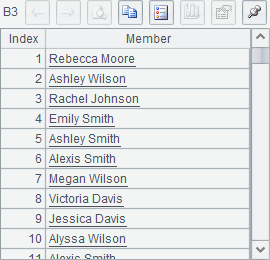

2.5.2 Loop functions
With encapsulated complex loop statements, loop functions can perform the same computation on each record of a table sequence/record sequence. For instance, select is for data querying, sort for data soting, id for getting distinct records, and pselect for fetching sequence numbers of the records satisfiying the specified condition(s). Here the most basic ones - select function and sort function- will be illustrated. For more information about loop functions, please refer to Loop Computations.
Data querying
The following cellset code finds out records whose Amount field is greater than or equal to 20,000 and whose Date is in the month of March. As both record sequence and table sequence have the same syntax for data querying, only the latter is used for our illustration:
|
|
A |
B |
|
1 |
=file("Order_Books.txt").import@t() |
=A1.select(Amount>=20000 && month(Date)==3) |
B1¡¯s result is as follows:

Whether the object of computation is a table sequence or a record sequence, the result of select function will always be a record sequence, that is, the references of records instead of the physical records.
Data sorting
In the following cellset, records are sorted in ascending order according to SalesID field, and those having the same SalesID are then sorted in descending order according to Date field. The syntax is same when sorting a record sequence and a table sequence. Here take the record sequence in B1 as an example:
|
|
A |
B |
|
1 |
=file("Order_Books.txt").import@t() |
=A1.select(Amount>20000) |
|
2 |
=B1.sort(SalesID,-Date) |
|
A2¡¯s result is as follows:

Whether the object of computation is a table sequence or a record sequence, the result of sort function will always be a record sequence. In fact, except for record modification, most of the functions can be used to handling table sequences and record sequences.